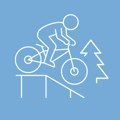
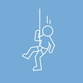
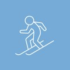

Dein Sportberg: 18 km Trails im Sommer, 14 km Pisten im WinterYour sports mountain: 18 km of trails in summer, 14 km of slopes in winter
Services, die genau passenServices that fit exactly
Gratis Bike- & Skiraum im HotelFree bike & ski room at the hotel
Dein Gerät schläft sicher — Skiraum inklusive, 8 min zu Fuß zur Talstation.Your gear sleeps safe — ski room included, 8 min on foot to the base station.
Zimmer & Pakete →Rooms & packages →Verleih-Vorteil für HotelgästeRental perk for hotel guests
Bike- & Ski-Verleih an der Talstation, auch E-Bikes — Details an der Rezeption.Bike & ski rental at the base station, incl. e-bikes — details at reception.
Zimmer & Pakete →Rooms & packages →Gravity-Card-PartnerGravity Card partner
Eine Saisonkarte, viele Parks — und der Semmering ist der nächste davon ab Wien.One season card, many parks — and Semmering is the closest one to Vienna.
14 Trails ansehen →See 14 trails →Recovery-Loop: Sauna → Pool → DinnerRecovery loop: sauna → pool → dinner
Nach dem letzten Lap: finnische Sauna & Dampfbad ab 15 Uhr, Hallenbad 27–29 °C bis 22 Uhr, dann direkt zum Dinner ins Grand View. Für Hotelgäste inklusive, externe SPA-Tageskarte an der Rezeption.After the last lap: Finnish sauna & steam bath from 3 pm, indoor pool 27–29 °C until 10 pm, then straight to dinner at Grand View. Included for hotel guests, SPA day pass at reception for externals.
SPA & Preise →Spa & prices →Verleih & Skilehrer auch am AbendRental & instructors in the evening too
Sport 2000 Puschi hat im Nachtbetrieb offen; Privatstunden der Schneesportschule Zauberberg auch abends.Sport 2000 Puschi stays open during night operation; Schneesportschule Zauberberg offers evening private lessons.
Skikurs & Verleih →Lessons & rental →−10% auf Liftkarten (Hotelgäste)−10% on lift passes (hotel guests)
−10% auf Liftkarten für Hotelgäste — Voucher direkt beim Check-in, gilt für Tages- und Nachtkarte. So fährst du 8 Minuten von der Piste ohne Anstellen los.−10% on lift passes for hotel guests — voucher at check-in, valid for day and night passes. So you start 8 minutes from the slope with no queue.
Zimmer & Pakete →Rooms & packages →Beste Aktivitäten & Services für euchBest activities & services for you

BikeparkBikeparkMehrMore →
Millennium JumpMillennium JumpMehrMore →
Ski & SnowboardSki & snowboardMehrMore →Eure Reise über den BergYour journey over the mountain
So läuft euer SommertagYour summer day
So läuft euer WintertagYour winter day
Passende Pakete — alles fertig geschnürtMatching packages — all ready-made


 Hirschi
Hirschi